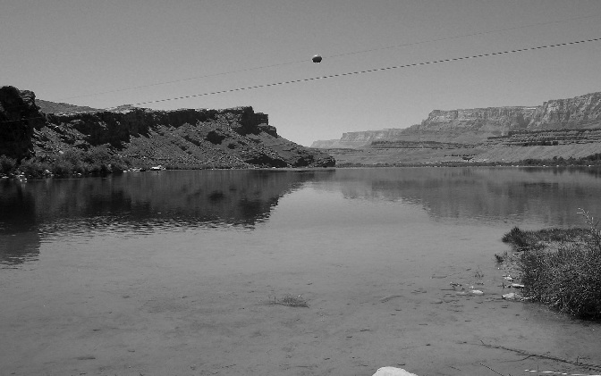

Chapter 10
From one of the letters of Sarah Roundy Berry, daughter of Lorenzo and Prisella, she records "In 1876 my father was in the legislature all winter. When he come home in the spring, he said, "President Young wants me to lead a company to Arizona to explore. Father was to lead as he had made two trips before. They were to leave in May." In another letter written by her, she said "My father said goodby to Susannah his 2nd wife, and to my mother Prisilla (his 3rd wife) and to each of us children for a total of three times each. My father said he would never see us alive again and he would 'die with his boots on.' His wives told him to tell the Authorities then how he felt but he said he would rather die with his boots on than to go against the Authority's wishes."

Colorado River, Lee's Ferry Crossing
Photo by Renée Mounteer
There are a number of accounts of the accident at Lee's Ferry. The most authoritative, first-hand account of the accident comes from a report signed by Daniel H. Wells, Erastus Snow and Brigham Young, Jr. As Lorenzo was concerned about the high water, it proved to be so. He was quite familiar with the conditions of the Colorado. According to the account, they were successful in sending the first two loads across the river. Those loads carried the horses. The third load carried a heavy baggage wagon and Lorenzo's wagon and was manned by Daniel Wells, Lorenzo Roundy, Brothers Hatch and Nuttall and Warren Johnson, the man running the ferry. The water was swift and according to the account, "The current at this point was too much for the boat and the bow began to dip water, the raft was immediately tossed but caught between two rocks and held the boat fast and the boat went down almost immediately until released of the wagons which floated off. Some of the men jumped off and swam to shore. Lorenzo ran along the rail towards the back of the boat, which was nearest the shore and shouted encouragement to the men to swim ashore. He then plunged into the water and swam for shore. It was then reported "After swimming a short distance he was seen to throw up his hands and he sank out of sight." He was never seen again. 1
A telegram was sent to all Bishops and Presidents of the church announcing the tragedy. 2 Several of the accounts mentioned that Lorenzo was an excellent swimmer. In the book about Lee's Ferry by Reilly, he gives some interesting details, at least some of his information coming from the journal of Brigham Young, Jr., Warren Johnson said that the conditions made it unsafe for a crossing. When pressed on the matter, stating that they had a schedule to keep to, he insisted that the conditions were too dangerous, but would cooperate if the leaders were intent on continuing, however, he refused to be responsible for the crossing, insisting that someone else be appointed to supervise the crossing. Lorenzo was to chosen to do so, based on past experience. 3
His wives and families mourned the loss. The most telling statement was one included a report almost two years later, published in the Woman's Exponent. The occasion of the report was to recognize the organization of the Relief Society in Kanarra. It was provided by Susannah Roundy, president of the society. Her simple statement was: "We were prospering, until the 24th of May 1876, when the sad accident of my dear husband being drowned in the Colorado River cast a gloom over all of us, and over the whole town. He was a kind husband, a loving father, and O! how we miss him." 4
Nothing much more fitting could be written in honor of Lorenzo. This history began with a simple history of Lorenzo, written by his daughter, and it ends with this simple and heartfelt tribute, given by his wife.
Lorenzo loved the Lord, was faithful and served wherever he was called. He loved his family and was loved by them. He was kind and loved by the people around him.
1 Brigham Young Letters, Box 43, folder 20 (reel 56), May 26, 1876
South Side Colorado River
May 26, 1876
Prest. B. Young
Dear Brother,
We take this opportunity of sending you a few lines respecting our trip. We have to mourn the loss of Brother Lorenzo W. Roundy. Our journey up to this place was pleasant and agreeable.
We found the large boat in pretty good repair and the large sweeps which we brought enabled us to load up & commence operations almost immediately. Sent over two loads of horses, 14 and 7 head. Third trip Bro Wells carriage the heavy baggage wagon and Bro. Roundy's wagon were put on the boat which was maned by Bro. Wells, Roundy, Hatch, Nutall, Johnson (who keeps the ferry), Hamblin, Carter and Wilkbanks, To make a safe trip and land just where we desire it is necessary to tow the boat half mile up the stream most of the way in an eddy, but there is a rocky point to pass where the current is very swift. Bro. Roundy and Carter were keeping the boat away with poles and oars. Bro. Emment was assisting at the tow rope with his pony, pulling by the horn of the saddle. The current at this point was too much for the boat and the bow began to dip water, the raft was immediately tossed but caught between two rocks and held the boat fast and the boat went down almost instantly until released of the wagons which floated off. Bro Wells, Hamblin & Nutall swam ashore. Bro. Hatch and Carter were supported by clinging to Bro. Wells' carriage & Bro. Wilkbank jumped ashore before boat then swung out. Bro. Roundy ran along the rail towards the rear of the boat which was nearest shore and when about half way called out "come on boys all who can swim," and then plunged into the water and struck out for the shore. After swimming a short distance he was seen to throw up his hands and he sank out of sight. Our small boat reached the spit in a few moments but nothing could be found of Bro. Roundy. As far as possible, under the circumstances the bank and islands below have been searched in hopes of finding the body but no success. Bro. Hatch, Carter and Johnson were recued [rescued] from their perilous situation with the small boat which then followed the wagons and succeeded in grounding Bro Roundy & Hatch's wagon on a bar where they left it as it was now dark.
Bro. Snow and B. Y. Jr. were down to examine the lower place as you directed. They had returned as far as Bro. Lee's mouth of Pariah when Bro Perkins [crossed out] Emmit met them with the news of boat's sinking but no lives lost. They followed the carriage and baggage wagon down to where they entered the marble canyon about two miles below where the boat sunk. The main part of our provisions, all the bedding, guns & cloths of the St. George boys, went down with the wagons. Bro. Wells harness and entire outfit with the exceptions of his mules, their halters and briddles, were lost.
The St. George boys will return from this point. The following brethren will continue: D. H. Wells & son, E. Snow, L. H. Hatch, D. D. McArthur, J. Hamblin, B. Y. Jr. & son, L. D. Young, Bro. Ensign. We can make out pretty well for provisions and have plenty of grain. We have ferried over our four wagons and luggage on the small boat which we brought with us and which has done excellent service. The flat was some damaged several flooring plank floated away and she was quite leaky. The river is pretty high but fell a foot last night. The current is variable and is perhaps 3 miles an hour and much more at places. The ferry is far better than we anticipated from former reports. The Brethren think the lower place mentioned by Bro. Hamblin is wholly impracticable now and never as good as this.
Had the accident which we have met with happened at the lower place there would have been none or very little chance of saving any of the brethren.
Bro. Roundy was warm with exercise and it is presumed that plunging into the cold water gave him a cramp for he was a good swimmer as we suppose.
We found several immigrants returning unable to cross in the old small boat by taking their wagons to pieces.
We are now all accross the river and Bro. Perkins is waiting to take our letters. We shall go to Navajo Springs 8 miles when we expect to camp and let our animals have something to eat. They have had but little but grain since we came here.
We are in good health and trust in God for ability to accomplish our mission, praying God to bless you we remain your brethren -
Daniel Wells
Erastus Snow
Brigham Young, Jr.
2 The Story of Telegraphy, Kate B. Carter, Copyright 1961, Daughters of Utah Pioneers, Utah Printing Co., p 61
"June 1st, 1876: To all Bishops and Presidents: While attempting to cross the Colorado River at Lee's ferry on Wednesday evening last, Bishop Roundy of Kanarra, formerly of Centerville, was drowned by sinking of the boat loaded with wagons, baggage and outfits. President Wells, Bishop Roundy, Nuttal, Hatch, Jacob Hamblin, Warren Johnson, John Porter and Elder Wilbanks were on board, but providentially were saved. Pres. Wells swam three rods, Bishop Roundy's body was not yet found. All the load including Pres. Well's carriage were lost. President Wells, Erastus Snow, Brigham Young, Jr., with a few others have gone on. No one was to blame. Everything possible was done to recover Brother Roundy's body. All well; very warm. — A. M. Musser"
4 The Woman's Exponent 1878-04-01 vol. 6 no. 21, p 162 (the issue starts on page 161)
Kanarra, March 7, 1878
"Editor Exponent:
"The Relief Society of this place being desirous of recognition with other Societies, offer a few items for publication. Our Society was organized December 14, 1875, by Bishop Lorenzo W. Roundy. Officers elected and sustained:
"Susannah Roundy, President.
Sophia Parker, Mary Jane Perkins, Counselors.
Lennie Allen, Secretary.
Deney Berry, Assistant Secretary.
Priscilla Roundy, Treasurer.
"We have also six Teachers. We were prospering, until the 24th of May 1876, when the sad accident of my dear husband being drowned in the Colorado River cast a gloom over all of us, and over the whole town. He was a kind husband, a loving father, and O! how we miss him. The same summer we buried three grand-children, and on April 19, 1877, Mary Jane Perkins died of heart disease. … "